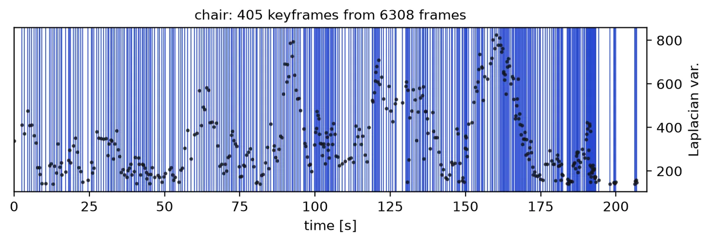
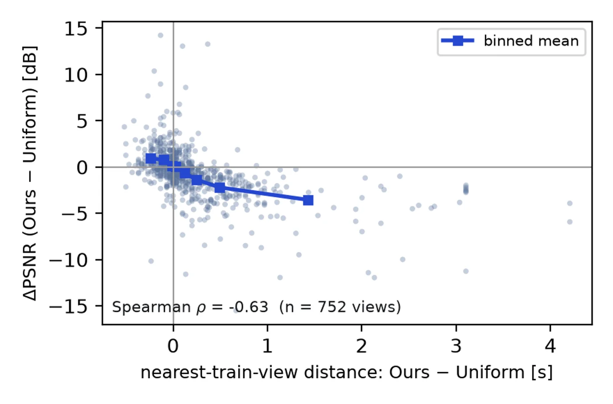
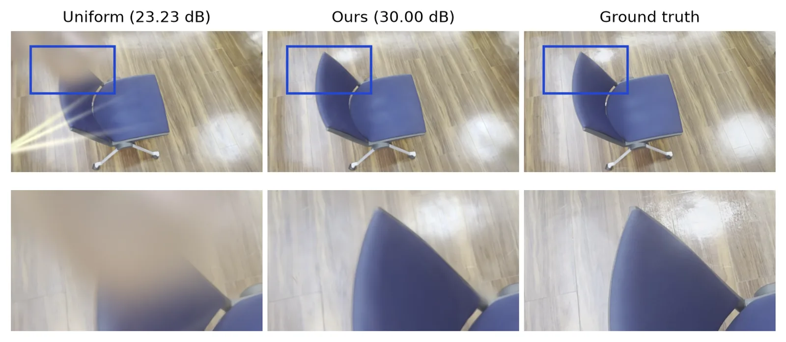
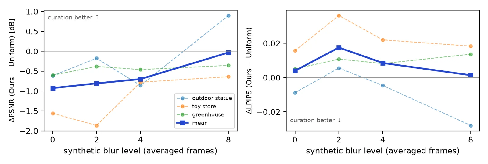

Abstract
The standard recipe for turning a phone video into a 3D Gaussian Splatting reconstruction begins with fixed-interval frame extraction — a step that silently admits motion blur, redundant views, and uneven baselines into the pipeline. We quantify how much reconstruction quality can be recovered by fixing only this step. Our fully automatic tool selects keyframes by tracked parallax rather than time, rejects blurred frames against an adaptive per-video threshold, and self-diagnoses its output to choose the COLMAP matching configuration. Across ten scenes from Tanks and Temples source videos, DL3DV captures, and casual phone footage, the answer is: no improvement. At an identical frame budget, curation lowers mean held-out PSNR by 0.70 dB (bootstrap CI excludes zero) — even though it genuinely improves SfM statistics. The reason is a strong per-view correlation: quality differences track the distance to the nearest training view (Spearman ρ = −0.63 over 752 views) — curation wins where its spacing is locally denser and loses where parallax-triggering thins coverage. Synthesizing exposure blur from 60 fps video (GoPro-style averaging) closes the mean PSNR gap monotonically, from −0.93 dB at blur-0 to −0.03 dB at 8-frame exposure — near parity only at the heaviest degradation; on ordinary captures, temporal coverage — not frame sharpness — predicts quality.
Method
The video tunes itself
A sampling pass measures the sharpness distribution and cumulative feature-track motion, from which every threshold — parallax trigger, blur floor, output resolution — is derived. The only input is the video.
Parallax, not time
A keyframe fires when median tracked displacement exceeds the derived threshold; the sharpest frame in a short buffer is kept. Redundant and blurred frames never reach the reconstruction.
Self-diagnosed COLMAP
The extracted sequence is QC'd for parallax gaps, and a ready-to-run COLMAP script is generated — exhaustive, sequential, or loop-detection matching — with the reasoning recorded alongside.

Results
Both arms receive an identical frame budget, identical COLMAP settings, and identical 3DGS training (gsplat, fixed seed); held-out test views are shared. Only the selection of training frames differs.
| Scene | PSNR ↑ | SSIM ↑ | LPIPS ↓ | Reg. % |
|---|---|---|---|---|
| Uniform (avg, 10 scenes) | 25.62 | 0.842 | 0.202 | 98.8 |
| Ours (avg, 10 scenes) | 24.92 | 0.832 | 0.205 | 99.5 |
Across ten scenes the mean is negative for curation (−0.70 dB PSNR, 95% CI [−1.10, −0.33]; SSIM likewise; LPIPS/DISTS/FLIP neutral-to-negative). The single per-scene win (+0.17 dB on a shaky handheld clip) lies within seed noise (±0.2–0.4 dB over three seeds). Yet curation does deliver at the SfM stage: lower reprojection error, longer tracks, more 3D points, and better registration where registration is hard (95% vs 88%).

Why: per-view quality is strongly predicted by local temporal coverage. The PSNR difference on each of 752 held-out views tracks which arm has the temporally nearer training view (Spearman ρ = −0.63; −0.58…−0.74 in every scene): curation wins where its spacing is locally denser (+0.69 dB) and loses where parallax-triggering thins coverage (−1.57 dB).


A controlled degradation study — exposure blur synthesized from 60 fps video by averaging 1/2/4/8 consecutive frames in linear color space, with scene, trajectory, lighting, codec, and the same sharp test views held fixed — shows the mean PSNR gap closing monotonically as degradation grows (−0.93 → −0.81 → −0.70 → −0.03 dB, near parity at the heaviest level; one scene flips to +0.90 dB).
BibTeX
@inproceedings{oshio2026curation,
title = {How Much Does Input Curation Alone Improve
3D Gaussian Splatting from Casual Video?},
author = {Oshio, Yuki and Fukiharu, Yuya and Shiki, Akane and
Kiyoyama, Yukito and Kihara, Miki and Ito, Ai and Imai, Shota},
booktitle = {SIGGRAPH Asia 2026 Posters (SA Posters '26)},
year = {2026},
publisher = {ACM},
doi = {10.1145/3829333.3847887}
}